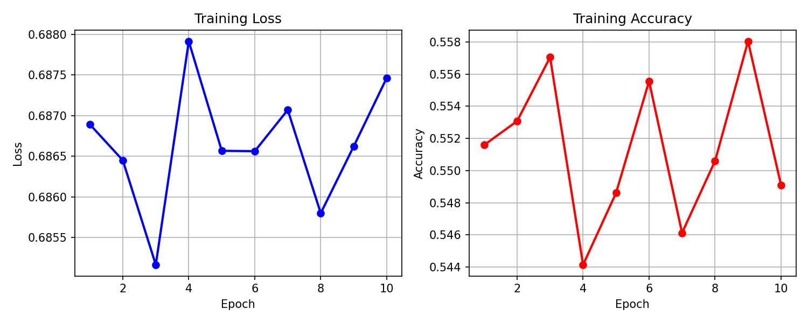

计算机视觉
基于 CNN & Deformable DETR 的交通标志识别
用经典 CNN（VGG/GoogLeNet 简化版）在 GTSRB 数据集上做多分类识别，进阶结合 mmdetection，用 Deformable DETR 在自制 4 类交通标志数据集上训练并测试，在真实视频上完成检测演示。
AI 辅助技术服务者 · AI-Assisted Tech Specialist
我把复杂需求拆成清晰方案，快速交付高质量成果。 I break down complex needs into clear plans and deliver high-quality results fast.
可靠 · 透明 · 双语
先确认需求再开工，保证结果准确可用。
01 · 我能做什么
程序开发、脚本编写、工具定制。
Python Development流程自动化、重复任务批处理。
Automation Scripts网络采集、数据清洗、可视化分析。
Data Scraping & Analysis响应式网站、落地页、作品集。
Website Building定位问题、排查依赖、快速修复。
Bug FixingWord/Excel/PPT 处理排版、中英互译。
Docs & EN-CN Translation02 · 项目作品
用经典 CNN（VGG/GoogLeNet 简化版）在 GTSRB 数据集上做多分类识别，进阶结合 mmdetection，用 Deformable DETR 在自制 4 类交通标志数据集上训练并测试，在真实视频上完成检测演示。
用 OpenCV 级联分类器实时采集人脸样本，构建并训练卷积神经网络分类模型，通过数据增强与 SGD+momentum 优化提升泛化能力，最终调用摄像头完成实时人脸检测、识别与标注。
在云服务器上训练 CNN 模型实现猫品种分类，将模型部署到本地，结合前端页面展示识别结果，打通从训练到推理展示的完整链路。
采用 YOLOv3 完成行人检测，结合卡尔曼滤波与匈牙利算法实现多目标跟踪与跨帧 ID 分配，将模型部署到本地 GPU 在视频流上完成实时检测计数。

NLP构建检索式对话系统，通过候选检索 + 排序（Rerank）模型选择最合适的回答，完成从数据、训练到对话交互的完整流程。
03 · 关于我
我是 AI 辅助技术服务者，专注用技术帮客户解决实际问题。擅长把复杂需求拆成清晰方案，快速交付高质量成果。支持中英文双语沟通，流程透明，先确认需求再开工，保证结果准确可用。